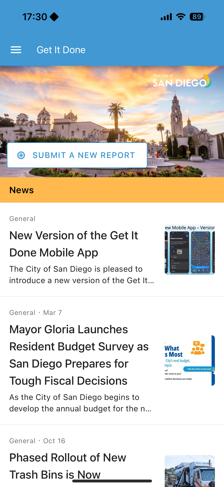
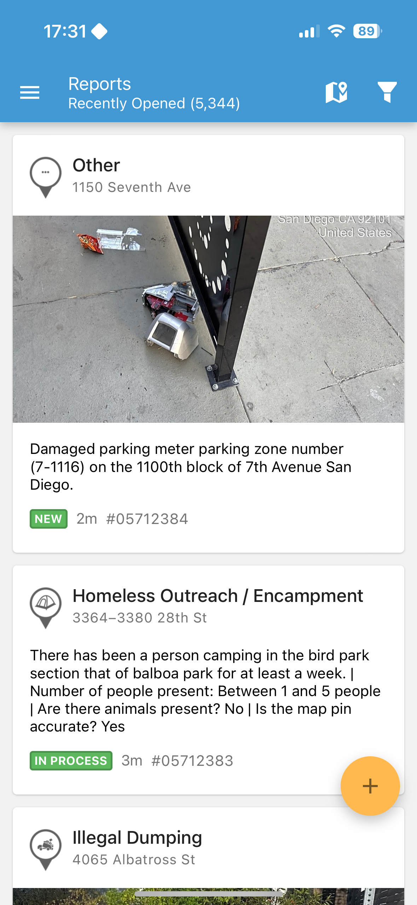

Overview:
Everyday, high school students of San Diego navigate the city and are often the first to notice potholes, pile of trash, or broken sidewalks. Despite their exposure to city problems, they do not report them because they are not able to or they don't know how to.
Currently, the "Get It Done San Diego" app is catered towards adults; however, extending the app to have younger people living in San Diego in mind not only makes the app more inclusive to a wider range of people, but it also closes the gap in civic engagement.


Problem Statement:
School children in San Diego need a reliable, relevant, and meaningful way to report city maintenance issues to lead to real change and improvements within San Diego.
User Research:
To better understand why school children like high schoolers in the city were not participating in civic engagement, we interviewed various current high schoolers in San Diego.
The most unexpected finding was when one of the high school students mentioned that because these city-wide issue reports seem to remain unresolved, she states "this problem has been around for a while, I don't think it will ever improve". The student expressed feelings of hopelessness, where it was not just the lack of tools, but there was a lack of faith in the system to resolve these city-wide issues.
Something that did not go as planned was when one of the interviewees told us that trying to appeal to students was a "waste" and that resources should be better directed towards making the app better for adults. This shows that some teens have become normalized to city-wide issues that they no longer see the need to fix them since it should be adults.
To combat these feelings to ignore civic engagement, we are extending the app "Get It Done San Diego" to create a social system where users can upvote existing reports to see they are not alone and create an interactive impact timeline to show that the city is listening to these issue reports, which shows that their contributions have meaning and impact.